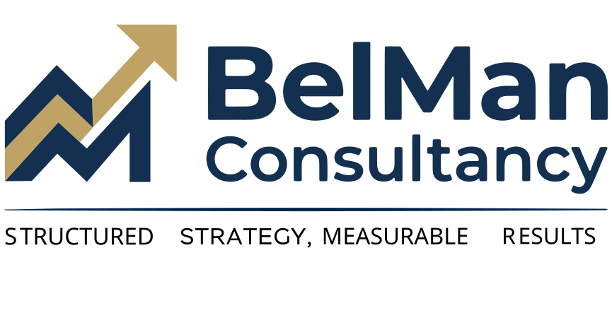

Structured Strategy. Measurable Results.
BelMan Consultancy delivers end-to-end project management, process engineering, and operational analytics — bringing structure, visibility, and momentum to your most critical work.
BelMan Consultancy — short for Belgian Management — is an independent consulting firm based in Leuven, Belgium. We specialise in project management, process design, and data analysis for organisations operating in complex, fast-moving environments.
With nine years of field experience across telecom infrastructure, technology, and operations, we bring both technical depth and structured methodology to every engagement. We don't just manage your project — we build the processes and analytics that make future projects easier.
Full lifecycle delivery from scoping and planning through execution, risk management, and formal closure. Your projects land on time, on scope, and on budget — with complete governance throughout.
We map how work actually flows, identify friction and gaps, then design documented processes your teams can follow, audit, and improve. Processes that outlast any individual project.
Turning raw project data into actionable intelligence. Custom KPI frameworks, Power BI dashboards, and structured reporting cycles that give leadership the visibility to make confident, timely decisions.
We map your environment, stakeholders, constraints, and objectives before making any delivery assumptions.
We build the planning frameworks, process documentation, and reporting infrastructure your project needs to run cleanly.
Embedded in your team, we drive day-to-day delivery with technical credibility and consistent structured follow-through.
Data analysis and continuous reporting keep all parties aligned — and produce lasting tools your team retains after close.
BelMan Consultancy combines project execution with operational analytics, KPI reporting, and structured governance frameworks. The result is clearer decision-making, reduced delivery risk, and measurable oversight across every phase of execution.
Based in Leuven, Belgium — available across the Benelux and beyond. Whether you have a project in motion or one about to start, let's talk.
contact@belmanconsultancy.com